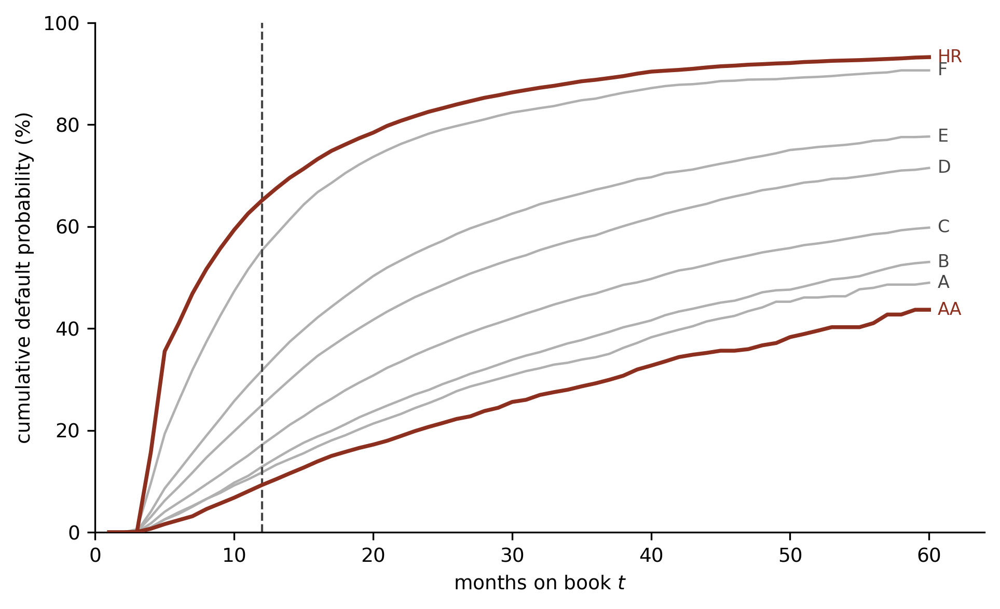

Credit Lecture S1: From a Fixed-Horizon PD to a Discrete Hazard
Deep Learning for Actuarial Modelling: a credit risk companion
Author
Mario Ervedosa
Published
September 1, 2026
Abstract
Credit lecture 1 measured default over a fixed outcome window of \(k\) months and set the second of its two exposure conventions aside, noting that months at risk is a discrete hazard and the door into survival analysis. This lecture walks through that door. It builds the survival table for the Bondora loan book, derives the survival product that turns a sequence of monthly hazards into a lifetime PD, and shows that a discrete-time hazard model is a logistic regression on a person-period expansion, so a lender’s existing scorecard machinery already fits survival models. It closes by measuring what treating early repayment as censoring costs, which is 3 percentage points over twelve months and 17 over sixty, and hands the correction to lecture S2. This lecture answers no summer school lecture; it exists because credit lecture 1 opened a door.
1 Where lecture 1 stopped
Lecture 1 offered two ways to measure the exposure of a loan and took the first. Measuring exposure in windows gives every retained loan the same one, \(v_i \equiv 1\) window of \(k\) months, and the frequency collapses to the default indicator \(D_i^{(k)} = \mathbf{1}\{T_i \le k\}\) itself. That is how application scorecards are built, and lecture 1 built one. Measuring exposure in months at risk instead gives each loan the time it actually spent exposed,
\[
v_i = \min(T_i,\, k) \text{ months},
\]
and here the frequency does not collapse. A loan defaulting in month two and a loan defaulting in month eleven both score \(D_i^{(k)} = 1\), yet they carry intensities differing by a factor of five, and the second convention keeps the difference the first discards.
This lecture takes the second convention seriously. The quantity \(\min(T_i, k)\) is the exposure of a discrete hazard model, and the machinery built on it answers questions the fixed-horizon PD cannot reach: when default arrives rather than whether it arrives inside one window, and what the PD is over any horizon rather than over the single horizon the flag was cut for. IFRS 9 needs exactly that, because an expected credit loss over the lifetime of an instrument needs a PD for every month of that lifetime.
The reader is assumed to hold lecture 1 and nothing else. Every symbol it fixed carries over unchanged, and the three time axes in particular: \(g_i\) for the vintage or origination month of loan \(i\), \(t\) for months on book, which is the attained age of the loan, \(u = g + t\) for calendar month, \(k\) for the horizon being asked about, and \(\tau\) for the snapshot date, a single date across this extract, 20 July 2021. Borrower age is a covariate here and is written \(x_i\), deliberately not standing in for the actuarial \(x\), whose role \(t\) plays.
import numpy as npimport polars as plimport pandas as pdimport matplotlib.pyplot as pltplt.rcParams.update({"figure.figsize": (9, 4), "figure.dpi": 150, "font.size": 9,"axes.spines.top": False, "axes.spines.right": False,})OX, GREY, RULE, BLUE ="#8C2F1E", "#B0B0B0", "#444444", "#1F4E79"surv = pl.read_parquet("../data/bondora_survival.parquet")print(f"{surv.height:,} loans, {surv.width} columns")
179,235 loans, 54 columns
2 Two clocks, and two symbols that must stay apart
Lecture 1 defined \(A_i = \tau - g_i\), the months of observation available on loan \(i\) at the snapshot, and used it to retain loans whose outcome window had closed, \({\cal W}_k = \{ i : A_i \ge k \}\). The survival literature defines a different quantity with a confusingly similar role, the censoring time\(C_i\) in \(\tilde T_i = \min(T_i, C_i)\), meaning the point at which the loan stopped being at risk.
However, these are not the same object, and conflating them biases every lifetime PD computed afterwards. Availability is a property of the calendar: it asks how long the snapshot could in principle have watched this loan. Censoring is a property of the loan: it asks when the loan actually left the risk set. A loan repaid in month nine left the risk set in month nine, whatever the calendar would have allowed.
ImportantWhy lecture 1 could get away with \(A_i\) and this lecture cannot
Lecture 1’s retention rule \(A_i \ge k\) is a legitimate calendar sample restriction. It asks only whether a full window could have been observed, and it then reads the outcome off a complete window, so the answer it gets is right for the loans it keeps.
A survival likelihood asks a different question of every loan, namely how long it contributed to the risk set, and it needs the actual exit for that. In this extract the two answers diverge sharply. Of the 179,235 loans, 42,144 were repaid without ever defaulting, and those left the risk set at repayment, typically years before \(\tau - g_i\) ran out.
gap = surv.filter(pl.col("exit_kind") =="settled").select( median_exit=pl.col("t_obs").median(), median_available=pl.col("A").median(),)print(gap)print(f"\nmedian months at risk before settlement : {gap['median_exit'][0]:.1f}")print(f"median months the calendar allowed : {gap['median_available'][0]:.1f}")
shape: (1, 2)
┌─────────────┬──────────────────┐
│ median_exit ┆ median_available │
│ --- ┆ --- │
│ f64 ┆ f64 │
╞═════════════╪══════════════════╡
│ 9.659138 ┆ 37.256674 │
└─────────────┴──────────────────┘
median months at risk before settlement : 9.7
median months the calendar allowed : 37.3
The median settled loan left the risk set after about ten months, whereas the calendar would have permitted roughly three and a half years of observation. Using \(A_i\) as the censoring time would therefore credit those loans with years of exposure they never had, and would drive every estimated hazard downwards.
One further clash is worth declaring at the outset, before it causes confusion. Botha and Verster (2025) use \(\tau\) with subscripts for the entry, resolution and stopping times of a spell, whereas lecture 1 fixed \(\tau\) as the snapshot date. Both conventions appear in the credit survival literature. This lecture keeps lecture 1’s meaning and writes exit times as durations in months on book, so \(\tau\) never carries a subscript here.
3 The survival table
The modelling table lecture 1 used, bondora_pd.parquet, deliberately cannot serve here. It keeps only seasoned loans and records whether default fell inside one fixed window, whereas a survival model needs every loan and needs to know when each one left the risk set. scripts/convert_credit_data.py therefore builds a second table, bondora_survival.parquet, over all 179,235 loans.
NoteHow each loan’s exit was determined
Botha and Verster (2025, Eq. 1) coalesce the ways a performing spell can resolve into a single nominal variable \(R_{ij}\) over four levels, accompanied by a censoring indicator \(c_{ij} \in \{0, 1\}\) which is one for a right-censored spell:
Bondora’s Status field maps onto three of these four, with write-off unobservable because the extract’s write-off columns are post-origination and were excluded from the repository’s tables. Each loan here contributes a single performing spell, so the spell index \(j\) is always one and is dropped from the notation.
The mapping needs one rule that is easy to get wrong. A DefaultDate takes precedence over Status, because default is absorbing. 10,743 loans carry a Status of Repaid and a DefaultDate together, having defaulted and later recovered, and reading Status first would score all of them as settlements and discard the event. The 52,887 loans marked Repaid therefore split into 10,743 defaults and 42,144 settlements.
Two approximations in the settlement timings are worth stating, since neither is visible in the counts. 855 settled loans carry a recorded end date falling after the snapshot, i.e. a scheduled date standing in for an unobserved early repayment, and the converter caps those at \(\tau\), which is the longest exposure consistent with the loan having ended by then. A further three carry an end date equal to their origination date, and the whole-month floor gives each of them one month of exposure it did not have. Both groups are small enough to leave every figure in this lecture unchanged, and both are the kind of thing that should be said out loud rather than absorbed silently.
That gives 71,416 defaults, 42,144 settlements and 65,675 censored observations. The censored group holds the 57,611 loans still Current at the snapshot together with 8,064 loans that were Late without having reached Bondora’s 60-days-past-due threshold, and those are therefore still at risk.
Two columns encode the outcome. The observed duration t_obs is \(\tilde T_i = \min(T_i, C_i)\) in months, alongside t_obs_m, the same quantity in whole months and floored at one so that a loan exiting inside its first month still contributes that month to the risk set. The event indicator is \(\delta_i = \mathbf{1}\{R_i = 1\}\), and it is derived from the exit kind rather than stored in its place, which matters: a table carrying only \(\delta_i\) would have baked the treatment of early repayment irreversibly into the data, and the last section of this lecture measures what that treatment costs.
4 Survival, hazard, and why a lifetime PD is a product
Let \(T_i\) be the time in whole months from origination to default. In discrete time the three functions that describe it are the survival function, the marginal default probability and the hazard. Writing \(t_{(k)}\) for the \(k\)th ordered month, Botha and Verster (2025, Eqs. 7 to 10) give the identities this lecture rests on:
with \(S(t_{(0)}) = 1\), since a loan cannot default before it exists. The hazard is the conditional default probability, meaning the proportion of the risk set at the start of month \(k\) that defaults during it. Inverting the middle identity and chaining it gives the result that reorganises how a credit modeller thinks about a lifetime PD:
This lecture writes the individual conditional default probability as \(q_{i,t}\) in place of \(h\), following the notation of Mario’s credit risk notation lecture and the actuarial \(q_x\) it descends from, and writes \({}_k p_{i,t}\) for the probability that loan \(i\), currently \(t\) months on book, survives a further \(k\) months. That has the shape of \({}_t p_x\) with \((k, t)\) in the roles of \((t, x)\). Everything in this lecture is measured from origination, so \(t = 0\) throughout and the second subscript is dropped to keep the formulae readable. Botha’s \(h(t_{(k)})\) and the \(q_{i,t}\) used here are the same object. In that notation,
Setting \(k = 12\) recovers exactly the quantity lecture 1 modelled, so the fixed-horizon PD is the special case of this expression at one chosen horizon. What the hazard formulation adds is every other horizon at no extra cost, which is the IFRS 9 term structure of default risk.
WarningA lifetime PD is never a sum of monthly PDs
The single most expensive arithmetic error in lifetime PD work is to add monthly hazards instead of chaining survival. Summing them ignores that a loan defaulting in month three is not available to default again in month four, so the sum double-counts and can exceed one. The Bondora hazards make the point without any need for a synthetic example, as the next section shows.
5 The life table and the Kaplan-Meier estimator
Estimating the hazards needs only two counts per month: the size \(n_k\) of the risk set at the start of month \(k\), and the number \(d_k\) of defaults during it. Botha and Verster (2025, Eq. 11) note that setting \(\hat q_t = d_t / n_t\) leads directly to the Kaplan-Meier estimator of Kaplan and Meier (1958). Both are computed here directly from the risk-set counts, with no survival package involved, which keeps the repository’s requirements.txt untouched and makes the arithmetic visible.
HORIZON =60# months; the modal contractual term in this book is 60def life_table(df, horizon=HORIZON):"""Risk set, defaults and other exits per whole month on book.""" t = df["t_obs_m"].to_numpy().clip(max=horizon +1) kind = df["exit_kind"].to_numpy() months = np.arange(1, horizon +1) n = np.array([(t >= m).sum() for m in months], dtype=float) d = np.array([((t == m) & (kind =="default")).sum() for m in months], dtype=float) w = np.array([((t == m) & (kind !="default")).sum() for m in months], dtype=float)return months, n, d, wdef kaplan_meier(n, d):"""Return the discrete hazard, the KM survival curve and its Greenwood se.""" q = np.divide(d, n, out=np.zeros_like(d), where=n >0) S = np.cumprod(1.0- q)with np.errstate(divide="ignore", invalid="ignore"): terms = np.where(n * (n - d) >0, d / (n * (n - d)), 0.0) se = S * np.sqrt(np.cumsum(terms))return q, S, semonths, n_k, d_k, w_k = life_table(surv)q_t, S_t, se_t = kaplan_meier(n_k, d_k)table = pl.DataFrame({"month": months, "at risk": n_k.astype(int), "defaults": d_k.astype(int),"other exits": w_k.astype(int), "hazard": q_t.round(5),"S(t)": S_t.round(5), "PD_t": (1- S_t).round(5),})print(table.filter(pl.col("month").is_in([1, 2, 3, 4, 6, 12, 24, 36, 48, 60])))
The first two rows carry a structural feature of the default definition rather than a quirk of the data. Bondora declares default at a median 79 days past due, so no loan accumulates enough arrears to be flagged in its first month, and exactly one does in its second. The hazard is therefore genuinely zero at \(t = 1\), which will matter when the model of the next section tries to estimate a parameter for it.
The Bondora loan book in discrete time, all 179,235 loans, with early repayment treated as censoring (the latent risks approach). (lhs): the estimated monthly default hazard \(\hat q_t\), which peaks at 5.70 per cent in month five and then declines as the book seasons. (rhs): the Kaplan-Meier survival curve with a Greenwood 95 per cent interval, shown as a band; the interval is narrow enough over the first three years to be hard to separate from the curve. The dashed vertical marks the twelve-month horizon lecture 1 modelled.
The hazard curve is the lifecycle component of Breeden’s (2016) age-period-cohort decomposition, which lecture 1 cited for the collinearity it forces. Here it is measured: default risk rises steeply to a peak in the fifth month on book, then falls away for the remaining fifty-five. A fixed-horizon flag cut at twelve months averages over the whole of that shape and reports one number.
5.1 The sum against the product
With the hazards in hand the arithmetic error named above can be priced.
for k in (12, 24, 60): product =1- np.prod(1- q_t[:k]) naive = q_t[:k].sum()print(f"k = {k:2d} months survival product {product:7.2%} "f"sum of hazards {naive:7.2%} overstatement {naive - product:+.2%}")
k = 12 months survival product 30.76% sum of hazards 36.01% overstatement +5.24%
k = 24 months survival product 50.98% sum of hazards 70.04% overstatement +19.06%
k = 60 months survival product 71.68% sum of hazards 124.46% overstatement +52.78%
Over twelve months the sum overstates the PD by 5.2 percentage points, which a reviewer might absorb as a rounding difference. Over sixty months it returns 124.5 per cent, which is not a probability at all. The failure is not subtle at long horizons, and lifetime PD work lives at long horizons.
5.2 Stratifying the curve
A survival curve becomes a modelling tool once it is cut by a covariate. Bondora assigns each loan a Rating at listing time, which lecture 1 kept precisely so that modelling on top of another model’s output could be discussed.
from scipy import statsRATINGS = ["AA", "A", "B", "C", "D", "E", "F", "HR"]rated = surv.filter(pl.col("Rating").is_in(RATINGS))curves = {}for r in RATINGS: m, n, d, _ = life_table(rated.filter(pl.col("Rating") == r)) curves[r] = kaplan_meier(n, d)print(pl.DataFrame({"Rating": RATINGS,"loans": [rated.filter(pl.col("Rating") == r).height for r in RATINGS],"PD_12": [round(1- curves[r][1][11], 4) for r in RATINGS],"PD_60": [round(1- curves[r][1][59], 4) for r in RATINGS],}))
fig, ax = plt.subplots(figsize=(6.5, 4))for r in RATINGS: S = curves[r][1] key = r in ("AA", "HR") ax.plot(months, (1- S) *100, color=OX if key else GREY, lw=1.8if key else1.1, zorder=3if key else2) ax.annotate(r, xy=(60.6, (1- S[-1]) *100), fontsize=8, va="center", color=OX if key else RULE)ax.axvline(12, color=RULE, ls="--", lw=1)ax.set_xlim(0, 64); ax.set_ylim(0, 100)ax.set_xlabel("months on book $t$"); ax.set_ylabel("cumulative default probability (%)")plt.tight_layout(); plt.show()

Kaplan-Meier default curves by Bondora listing grade, on the 176,502 loans carrying a grade. The eight curves are strictly ordered at every month over the full sixty and never cross, so the grade separates risk over the whole horizon rather than only at the twelve-month point a scorecard would be cut for. Bronze marks the two extreme grades.
observed = np.zeros(len(RATINGS)); expected = np.zeros(len(RATINGS))t_by = [rated.filter(pl.col("Rating") == r)["t_obs_m"].to_numpy().clip(max=HORIZON +1)for r in RATINGS]k_by = [rated.filter(pl.col("Rating") == r)["exit_kind"].to_numpy() for r in RATINGS]for m inrange(1, HORIZON +1): n_j = np.array([(t >= m).sum() for t in t_by], dtype=float) d_j = np.array([((t == m) & (k =="default")).sum() for t, k inzip(t_by, k_by)], dtype=float)if d_j.sum() ==0or n_j.sum() ==0:continue observed += d_j expected += d_j.sum() * n_j / n_j.sum()chi2 = (((observed - expected) **2) / expected).sum()dof =len(RATINGS) -1print(f"log-rank chi2 = {chi2:,.1f} on {dof} df, p = {stats.chi2.sf(chi2, dof):.3g}")
log-rank chi2 = 29,022.7 on 7 df, p = 0
The log-rank test compares the defaults observed in each grade against those expected if every grade shared one hazard, accumulating the comparison month by month over the risk sets. At \(\chi^2 = 29{,}022.7\) on 7 degrees of freedom the null of a common hazard is not remotely tenable, which is the formal counterpart of eight curves that never touch.
6 A discrete-time hazard model is a logistic regression
Here is the result that makes survival analysis immediately available to a lender. Stratifying by one grade at a time does not scale, so the hazard needs covariates, and the way to get them requires no new estimation machinery at all.
Restructure the data so that each loan contributes one row per month it was at risk, carrying a binary response equal to one in the month it defaulted and zero otherwise. Botha and Verster (2025) call the resulting response an event history indicator \(e_{it}\), following Singer and Willett (1993), and note that it produces the vector \((0, 0, \ldots, 1)\) for a defaulted loan and \((0, 0, \ldots, 0)\) for a censored one. This layout is the person-period expansion, and on it the conditional default probability \(q_{i,t}\) is simply the mean of a binary response. Any method that maximises a binomial likelihood therefore fits it.
def person_period(df, horizon=HORIZON):"""One row per loan-month at risk, with the event history indicator."""return ( df.with_columns(n_periods=pl.min_horizontal(pl.col("t_obs_m"), pl.lit(horizon))) .with_columns(t=pl.int_ranges(1, pl.col("n_periods") +1)) .explode("t") .with_columns( y=((pl.col("t") == pl.col("t_obs_m"))& (pl.col("exit_kind") =="default")).cast(pl.Int8) ) )pp = person_period(surv)print(f"{surv.height:,} loans become {pp.height:,} loan-months "f"({pp.height / surv.height:.1f} per loan on average)")print(f"events in the expansion: {pp['y'].sum():,}")grouped = pp.group_by("t").agg(d=pl.col("y").sum(), n=pl.len()).sort("t")print("\nexpansion hazard equals the life-table hazard:", np.allclose((grouped["d"] / grouped["n"]).to_numpy(), q_t))
179,235 loans become 2,672,193 loan-months (14.9 per loan on average)
events in the expansion: 71,208
expansion hazard equals the life-table hazard: True
The expansion reproduces the life-table hazards exactly, which is the check that it was built correctly. Note that it is a genuine reshaping rather than a resampling: the 71,208 events are the defaults occurring within sixty months, each appearing once.
Botha and Verster (2025, Eq. 14), following Singer and Willett (1993), then specify the discrete-time hazard model as a logistic regression,
where \(\boldsymbol{E}_{i}\) holds indicator variables flagging the period \(t \in \{1, \ldots, m\}\). Those period indicators together with their coefficients \(\boldsymbol{\alpha}\) form the baseline hazard, and consequently no stand-alone intercept exists. The remaining three blocks are time-fixed covariates measured at the start of the spell, spell-level time-varying covariates, and portfolio-level time-varying covariates such as macroeconomic factors.
Only the first two blocks can be fitted here, and the reason is the one lecture 1 established. Bondora records a single snapshot, so no covariate can vary with \(t\) and the terms \(\boldsymbol{\gamma}\) and \(\boldsymbol{\delta}\) have nothing to estimate from. The macroeconomic block \(\boldsymbol{x}(t)\) is exactly what a point-in-time PD needs, and its absence here is the collinearity of \(u = g + t\) reappearing in a new guise.
6.1 The baseline hazard alone
Before adding covariates, fit the baseline on its own. A model carrying one indicator per month is saturated in \(t\), so it must return the life-table hazards and nothing else. Grouping the expansion to one row per month first makes the fit instant, and lecture 2 established that the grouped binomial and individual Bernoulli likelihoods agree.
import statsmodels.api as smimport statsmodels.formula.api as smfg = grouped.to_pandas()g["period"] = g["t"].astype(str)saturated = smf.glm("d + I(n - d) ~ C(period) - 1", data=g, family=sm.families.Binomial()).fit()q_fit = saturated.predict(g).to_numpy()print("saturated fit reproduces the life table:", np.allclose(q_fit, q_t, atol=1e-8),f"(max abs difference {np.abs(q_fit - q_t).max():.2e})")print(f"PD_60 from the fitted hazards : {1- np.prod(1- q_fit):.6f}")print(f"PD_60 from Kaplan-Meier : {1- S_t[-1]:.6f}")
saturated fit reproduces the life table: True (max abs difference 7.19e-15)
PD_60 from the fitted hazards : 0.716798
PD_60 from Kaplan-Meier : 0.716798
The two agree to fourteen decimal places. Hence Kaplan-Meier and a period-indicator logistic regression are the same estimator wearing different clothes.
That fit also emits a perfect-separation warning, suppressed here by the document’s warning: false setting but real. Month one carries zero defaults, so its coefficient wants to run to minus infinity and is not identified. The fix is to band the sparse early months, which the covariate model does.
6.2 Adding covariates
The covariates are those of lecture 1’s model GLM3, namely age class, log-income and country, so the comparison that follows is like for like. The baseline is banded into nine intervals, which removes the separation and keeps the shape.
Two features of that output tie the lecture back into the series. The baseline coefficients trace the lifecycle directly: months one to three sit at \(-7.23\) on the logit scale, effectively zero hazard, then the band four to six jumps to \(-2.61\) and the coefficients decline monotonically thereafter to \(-3.72\) over months 49 to 60. Furthermore, the log-income coefficient is negative at \(-0.0669\). Lecture 1 found the marginal income effect positive and showed the sign was a composition artefact that reversed once country entered the model. Here the same reversal holds in a hazard model over sixty months, so the Simpson’s paradox lecture 1 diagnosed was a property of the portfolio rather than of the twelve-month window.
6.3 The term structure
The payoff is that one fitted model now delivers a PD at every horizon. Chaining the predicted hazards per loan and averaging over the portfolio gives the term structure of default risk.
The term structure of default risk from the fitted discrete-time hazard model, averaged over the 179,171 loans in the design. (lhs): the fitted baseline hazard by band, as a hazard at the reference profile, against the unconditional Kaplan-Meier hazard. (rhs): the model’s cumulative PD by horizon against the marginal Kaplan-Meier curve, which it tracks closely at the short end (30.77 against 30.76 per cent at twelve months) and slightly below at the long end (71.20 against 71.68 at sixty). Both panels treat early repayment as censoring, which the next section shows overstates the level.
7 What treating repayment as censoring costs
Every estimate above treated a settled loan as censored, meaning it was removed from the risk set with no event recorded, exactly as an administratively censored loan is. Botha and Verster (2025) name this the latent risks approach, after Putter et al. (2007), and it is the default treatment in most survival software. Nevertheless, it carries an assumption that is false in a loan book.
Censoring is legitimate when it is independent of the event, i.e. when a loan leaving the risk set tells you nothing about its default risk. Early repayment fails that test in both directions. A borrower who repays early is disproportionately a borrower who would not have defaulted, so removing them leaves a risk set enriched in weak credits and drives the estimated hazard up. Consequently early repayment is a competing risk rather than censoring, and the estimator that respects the distinction is the cumulative incidence function, estimated by Aalen-Johansen.
The two estimators differ in one place. Kaplan-Meier weights each month’s hazard by survival with respect to default alone, whereas the cumulative incidence function weights it by survival with respect to any exit:
The three quantities sum to one to twelve decimal places, which is the check that the decomposition is complete: every loan has defaulted, settled or survived. Over twelve months the latent risks treatment overstates the PD by 3.05 percentage points, and over sixty by 16.99, taking a lifetime PD of 54.69 per cent up to 71.68.
7.1 Lecture 1 as the test case
The size of the error can be asserted, or it can be tested against a sample where the truth is directly observable, and lecture 1 supplies one. On its seasoned sample every loan has a complete twelve-month window by construction, so no loan is administratively censored inside the horizon, and the fraction defaulting within twelve months is simply counted, with nothing left to estimate. That fraction was 28.95 per cent.
The cumulative incidence function recovers lecture 1’s default rate exactly, while Kaplan-Meier misses it by 3.11 percentage points. The agreement is an identity rather than a coincidence. Where no loan is censored inside the horizon, the cumulative incidence telescopes,
which is the observed proportion. Hence the fixed-horizon PD of lecture 1 and the competing-risks survival estimate are the same quantity computed two ways, and the survival machinery generalises lecture 1 rather than contradicting it. What Kaplan-Meier estimates on this sample is a different quantity: the PD that would obtain if early repayment were somehow abolished while default risk stayed put.
The correction, and the regression model that carries it (the Fine-Gray subdistribution hazard), belong to lecture S2. Note carefully that the term structure fitted above inherits this bias, since it too treats settlement as censoring, so its levels should be read as an upper bound.
8 Takeaways
Survival analysis reaches credit risk through a short bridge, and this lecture crossed it in four steps.
A fixed-horizon PD and a discrete hazard are the same information organised differently. Setting \(k = 12\) in \(\mathrm{PD}_k = 1 - \prod_{t \le k}(1 - q_{i,t})\) recovers lecture 1 exactly, and every other horizon comes free.
A lifetime PD is a product of survival factors. Summing the Bondora hazards over sixty months returns 124.5 per cent against a correct 71.7, so the error is disqualifying rather than approximate.
A discrete-time hazard model is a logistic regression on a person-period expansion. A period-indicator model reproduces Kaplan-Meier to fourteen decimal places, and adding covariates needs no machinery a lender does not already own.
Early repayment is a competing risk. Treating it as censoring overstates the sixty-month PD by 17.0 percentage points here, and the cumulative incidence function recovers lecture 1’s observed rate exactly where Kaplan-Meier misses it by 3.11.
One limitation runs through all of it. The extract holds a single snapshot, so no covariate varies with time and the portfolio-level block \(\boldsymbol{x}(t)\) of the Botha and Verster specification cannot be fitted. That block is where a point-in-time PD comes from, which returns the lecture to the identity \(u = g + t\) and to data/amex_panel.parquet, where the question can actually be asked.
Lecture S2 takes up the translation between the actuarial and statistical traditions, the central exposed to risk against the person-period expansion, and the Fine-Gray correction this lecture measured and deferred.
Copyright and attribution
This lecture answers no lecture of the summer school Deep Learning for Actuarial Modeling and is original to this repository, written because credit lecture 1 opened a door it did not walk through. It inherits that lecture’s notation, which in turn adapts Scognamiglio, Maggi and Wüthrich (2026). The discrete-time hazard identities, the \(R_{ij}\) resolution encoding and the model specification follow Botha and Verster (2025); the Bondora loan book is public.
References
Aalen, O.O. and Johansen, S. (1978). An empirical transition matrix for non-homogeneous Markov chains based on censored observations. Scandinavian Journal of Statistics.
Botha, A. and Verster, T. (2025). Approaches for modelling the term-structure of default risk under IFRS 9: a tutorial using discrete-time survival analysis.
Breeden, J.L. (2016). Incorporating lifecycle and environment in loan-level forecasts and stress tests. European Journal of Operational Research.
Fine, J.P. and Gray, R.J. (1999). A proportional hazards model for the subdistribution of a competing risk. Journal of the American Statistical Association.
Greenwood, M. (1926). The natural duration of cancer. Reports on Public Health and Medical Subjects.
Kaplan, E.L. and Meier, P. (1958). Nonparametric estimation from incomplete observations. Journal of the American Statistical Association.
Putter, H., Fiocco, M. and Geskus, R.B. (2007). Tutorial in biostatistics: competing risks and multi-state models. Statistics in Medicine.
Singer, J.D. and Willett, J.B. (1993). It’s about time: using discrete-time survival analysis to study duration and the timing of events. Journal of Educational Statistics.
Scognamiglio, S., Maggi, M. and Wüthrich, M.V. (2026). Deep Learning for Actuarial Modeling, SSRN 5162304.